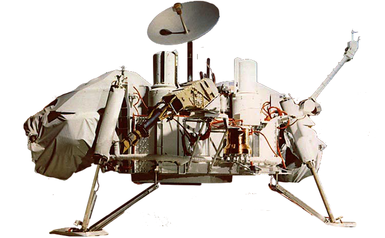

Red Planet
Exploration of Mars

The exploration of Mars has taken place over hundreds of years...
Viking Lander
The Viking 1 lander touched down on the surface of Mars on July 20, 1976...

Mars Rovers
Launched in 2003, Opportunity landed on Mars...